Updaten van de Bigip
Procedure voor het updaten van het F5 Bigip Cluster.
Omdat we 2 redundante F5 Bigip's hebben kunnen we deze gefaseerd updaten. We starten hierbij met de MP-Bigip20 (in roterdam).
- De ISO met de update kunnen we aanvragen bij Telindus
- De update wordt uitgevoerd vanaf de managementserver.
- Download de iso en login op de Bigip20 met een administrator account.
- Ga naar System / Software Management / Image List
- Importeer hier de iso.
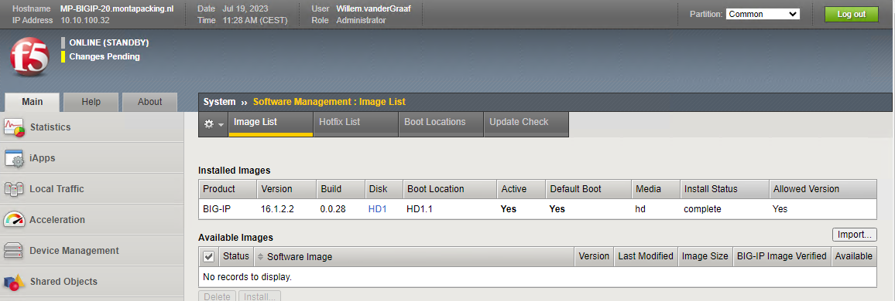
- Klik op Import
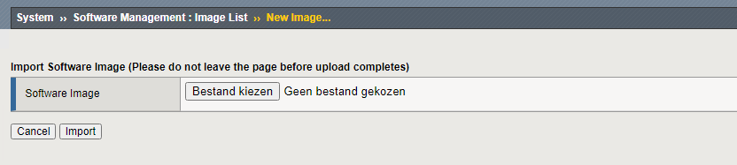
- Selecteer het iso-bestand en klik op "import".
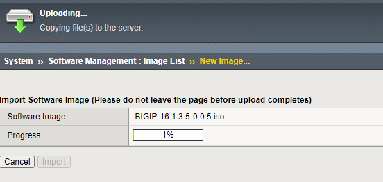
- De iso wordt geupload naar de Bigip.
MD5 controleren
- Het bestand wordt geplaatst in de map /shared/images.
- Met md5sum BIGIP-16.1.3.5-0.0.5.iso kun je dan de MD5 controleren (cli). Er moet dan zoiets als dit uitkomen. 4797e0e005c930adbc905860e807e5d3 BIGIP-16.1.3.5-0.0.5.iso
Upgrade installeren
Voorbereidingen
- Voor de installatie altijd een snapshot maken in VM-Ware.
- Ook maken we een Archive ( System - Archives )
- Ook maken we een Support Snapshot.
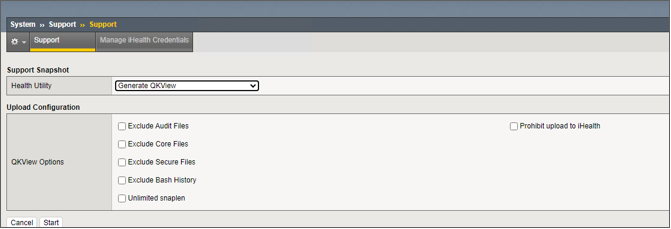
Zet de Healt Utility op "Generate QKView" en klik op start
Maak mbv de CLI een print van de config.
Doe dit met Putty dan kun je de log gelijk opslaan
tmsh -q -c 'cd /;show running-config recursive'
Check Service check date
tmsh show sys license | grep "Service Check Date" 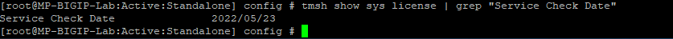
Op https://my.f5.com/manage/s/article/K7727 kun je nakijken of de Service Check Date van het systeem na de genoemde datum op de website komt. Als dat niet zo is dan de update niet installeren.
Instaleren
- We gaan nu de geuploede iso installeren.
- Ga naar System - Software Management - Image List 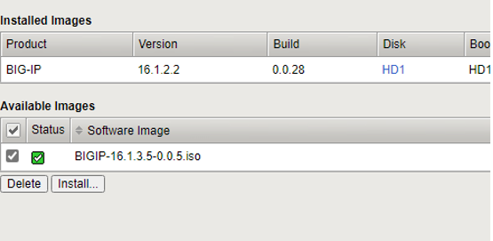
- Zet een vinkje voor het Software Image en klik op Install.
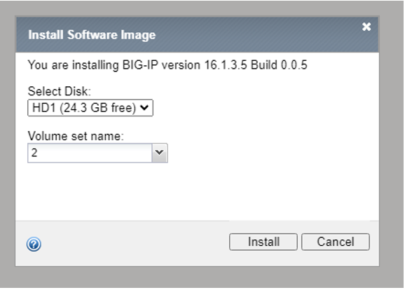
- Installeer de upgrade op een nieuwe locatie.
- Deze selecteer je bij "Volume set name"
- Je kunt hier bij voorbeeld een 2 intypen.
- Klik install
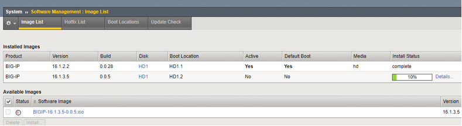
- De voortgang is te zien in het tabje Image List
- Als de installatie gereed is krijg je onderstaande scherm te zien.
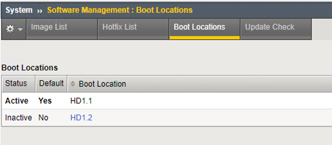
- Klik nu op de Boot Location (in ons voorbeeld HD1.2)
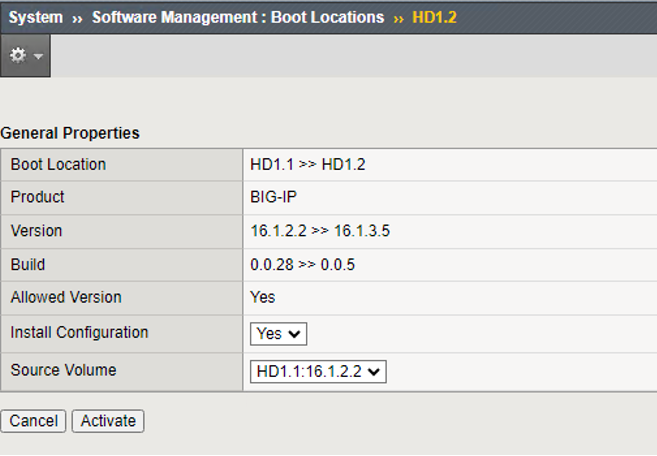
- Zet de Install Configuration op Yes
- Zet de Source Volume op het juiste volume
- Klik dan op Activate
- De Bigip gaat nu reboten vanaf de nieuwe Boot Location.
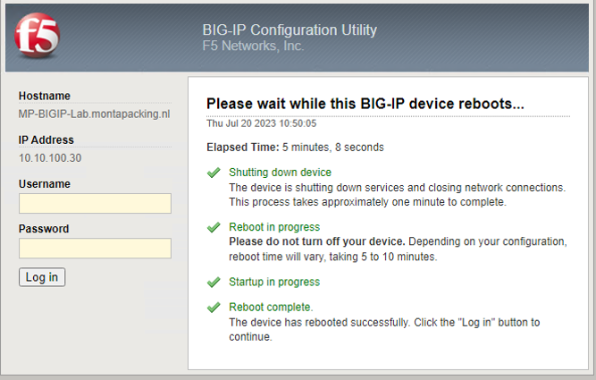
- Bovenstaand scherm laat zien dat de gehele procedure is uitgevoerd en je weer kunt inloggen.
- In onderstaand scherm kun je dan controleren of de juiste Boot Location is gekozen en de nieuwe versie van de software actief is.
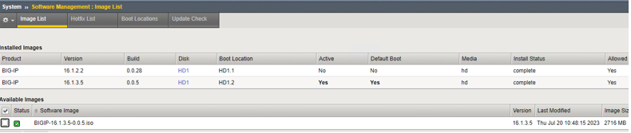
- Mocht er toch iets misgegaan zijn tijdens de upgrade/reboot dan kun je onder het tabje Boot Locations de vorige weer activeren.